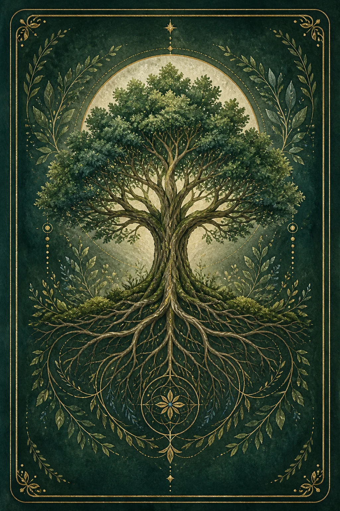

Tap for meaning
Free online oracle · No signup
Free Animal Oracle Card
For use on this website only
Draw one animal oracle card for spiritual meaning, protection, and confirmation.
Click to reveal the animal guide ready to show up in your life—and keep showing up as confirmation along your path.

KELA
Messages from the TreesAnimal Oracle · 22-card deck
Draw your animal oracle card
Close your eyes, hold your question, and take one slow breath.
Watch for its return as ongoing confirmation.Local preview: cycle through all 22 Animal Oracle cards.
The Echo
The reveal is only the beginning.
In the days ahead, your animal guide may show up in a conversation, book, picture, toy, dream, song, passing remark, or an unexpected place in nature. The form can be ordinary. The timing is what asks you to pause.
When it appears, return to the question on your card. Notice what you were thinking, asking, or deciding just before the animal found you. Let the moment support reflection; it does not make decisions for you or promise a particular outcome.
Protection invocation
Your mind deserves to be a sanctuary.
Close your eyes, take one steady breath, and tune into the guide that found you. Each animal, tree, or plant offers one suggested spiritual meaning: the central quality named on its card. Hold that single quality as a clear place for your attention to return.
This is a KELA protection invocation: a deliberate spiritual boundary for your attention. Speak: “Dear [guide], please protect my mind and energy. Allow only kind thoughts and words to enter my field.”